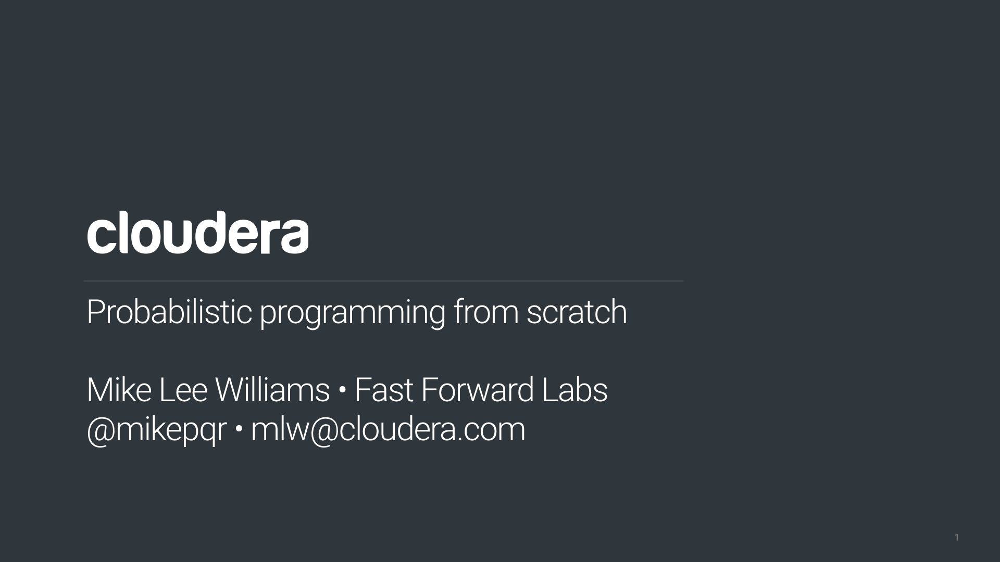
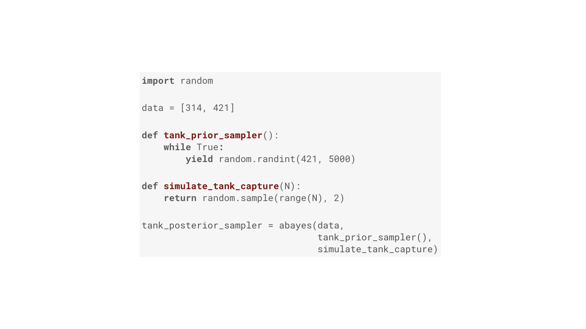

|  | I’m Mike, and I’m a research engineer on Cloudera’s machine learning services team, Fast Forward Labs # |
| Among other things, Fast Forward Labs writes technical reports and build prototypes on new ideas in machine learning. Here’s our back catalog. It’s a team effort, and what I’ll be talking about today builds off that work. # | |

|
Here’s the roadmap for what we’ll be getting into today. We’re going to talk about why a particular approach to real world data is great, how you take that approach by hand yourself, why you might in fact not want to, and what the real world options are. In particular, we’re going to implement a particularly simple Bayesian inference algorithm from scratch, in very few lines of Python. In so doing, we’re going to build a probabilistic programming system. My hope is that, although our system is going to be slow, you’ll leave with a pretty deep intuition for what’s going on under the hood of the real world alternatives. And in implementing it in code, we’ll be able to avoid the maths entirely. # |
| The first point I want to make, is that Bayesian inference is great. We’ll get into the details of how it works later, but this first section is about why you’d go to the trouble? What does it offer? # | |
| We’re going to use this recurring example: an A/B test in which layout A has a 4% conversion rate (where “conversions” are mailing list signups, purchases, whatever), and layout B has a 5% rate. Obviously layout B is better, so we should go with that, right? # | |
| Why is layout B better? Well, 5 is a bigger number than 4. We’re not going to get a Fields Medal for that, but let me show you that 5 is a bigger number than 4 or in a slightly weird, pedantic way. The reason I’m doing this will become clear later. The reason I know 5 is bigger than 4 (and therefore B is better) is that the X placed on this plot, which is the outcome of our experiment, is above the line. So let’s ship layout B. Talk over, right? # | |
| Not so fast. What if I tell you that updating the layout of our website costs $1m? The stakes are high! And what if I tell you that layout A only had 25 visitors, one of whom converted (that’s still 4%), while layout B had 20 visitors, one of whom converted (5%). Hopefully you’re now much less confident that you know layout B is better than layout A. But the question is: how confident are you? How will you know when you’re confident enough? Quantitatively measuring that confidence is where Bayesian inference comes in. # | |
|
This is the Bayesian inference “pipeline”. We need two inputs: our beliefs before we get some new data, and the new data. Those two things are reconciled inside the Bayesian inference “black box” (which we’ll open up later), and the output is revised beliefs that incorporate what we knew before we got the data, and the data. With those revised beliefs we can deploy a model, just like any other machine learning model, that makes predictions. Or perhaps more concretely, we can make decisions such as going with layout A or layout B. Incorporating our beliefs is a formal, mathematical version of the statement that “extraordinary claims require extraordinary evidence”. The corollary of that is “plausible claims require less evidence”. Those beliefs we input tell the algorithm how extraordinary the “claim” made by the data is. # |
|

|
Now, what are “beliefs”. I’m avoiding maths entirely in this talk, but I want to introduce two important pieces of jargon: the prior and posterior distributions. They’re exactly what we called our “beliefs” and our “revised beliefs” on the previous slide. Let’s imagine that we’ve used layout A before, perhaps last summer. We think it’s conversion fraction is around 3 or 4%. We wouldn’t rule out 2%, or even 6%, but we’d pretty much rule out 10%. That’s what the prior distribution on the left does. That’s one of the inputs. The other input is the data, which was 1 conversion out of 25 visitors. Applying Bayes to those inputs gives us the posterior on the right. The crucial thing to note about the posterior is that it is narrower and taller than the prior. Narrower and taller in the context of belief means we are more certain. And that makes sense: we learned something from the experiment! # |
|
Suppose for layout B we genuinely knew nothing about its conversion fraction. Well, not nothing. Of course we’re logically certain that the conversion fraction is greater than 0 and less than 100%. In this situation we have a “uniform” prior distribution from 0 to 100%. I’ve truncated the x-axis at 10% here. Apply Bayes to that prior and the data for layout B (one conversion out of 20), and we get the posterior on the right. And at this point we’re nearly finished. The posteriors are what we use to answer arbitrary, specific questions. So, remember this is an A/B test. Our question is “A or B”? # |
|

|
We answer that like this: we plot samples from both posterior distributions simultaneously (technically this is the “joint posterior”) on that weird plot I used to prove that 5 is bigger than 4. If we do that we get this “cloud” of points. Two say which layout it better, we simply and exactly compare the fraction of points above and below the line. So in this case, we’re 86.5% confident layout B is better than layout A. That’s an honest, complete description of what we know after the experiment. Whether that’s confident enough to bet $1m is another question, but we have all the information that data can tell us. And we can use this cloud of points to say how confident we are about the answers to other concrete questions by comparing the fraction of points on either side of different lines. We could, for example, say how confident we are that layout B’s conversion fraction is about 8%. Or how confident we are that layout B’s conversion fraction is at least twice that of layout A. # |
|
Back to the simple “A or B” question: what if that 13.5% of being wrong is more than we can live with? Well, of course we get more data. And Bayes makes it easier to incorporate that data, simply by using the revised beliefs that are the output of the pipeline, along with new data as the input to another round of inference. If you do that, you get something like this. As more visitors arrive (in batches of 80 in this case), the posterior distribution becomes narrower and taller, corresponding to growing confidence. Eventually we’ll become sufficiently confident that one of the layouts is best. I don’t have to use batches of 80. This could be a distribution that updates with each and every visitor. Imagine having that as a dashboard in your boardroom. You could stop the A/B test (and stop showing people a less effective layout) as soon as possible. This makes you money! # |
|
|
We’ve now seen all three of the advantages of Bayes I mentioned in the outline: you can quantify risk (or confidence, or uncertainty), you can incorporate institutional knowledge (our knowing a little bit about layout A before we conduct the test was an example), and the dashboard that provides a live picture of our confidence is online learning. But I glossed over how what happens inside the box labeled “Bayesian inference” in the pipeline. Let’s look at that in more detail. Rather than looking at it mathematically, in honor of the fact that we’re on the CS track here at Qcon, we’re going to write some code. And in fact they code we’ll right is exactly what I used to generate all the plots in this talk. We’re going to use Python, but if you know what a for loop is and you can read English, you’ll be fine. # |
|
|
This is one way of doing Bayesian inference. It’s a specific algorithm called approximate Bayesian computation. It’s essentially brute force. The function here has three inputs. Two of them were on our pipeline: they data, and the prior distribution. Concretely the prior distribution is a Python generator that yields a stream of guesses of the true value of the thing we want to know (such as the conversion fraction). Yielding more guesses around a particular number corresponds to a stronger belief that is the true value. The third input is a function that simulates the process that generated our data. The algorithm works like this: for each guess of the thing we want to know (first line), run a simulation of the process that generated the data. If the outcome of that simulation matches the data (second line) then the guess must have been a good one! Yield that. In other words: we’ve built a filter that takes in a stream of guesses, and allows only the good ones to pass through (where good means a simulation of the experiment assuming the guess is true looked just like the actual results). # |
|
| Let’s use this abayes filter to get the posterior distribution of layout B in our A/B test. The first input is the data. Here’s the data: 20 visitors convert out of 400. Pretty simple. # | |
| The next input is this thing that generates guesses of layout B’s conversion fraction, the “prior sampler”. We know nothing about layout B, so this function works: it’s gives us a stream of random numbers between 0 and 1. # | |

|
Finally we need a simulate function, that simulates N people visiting our website, and tells us how many of them converted assuming a particular conversion fraction. This is some Python code to do that. If you’re a Python programmer, you’re right that this is very unidiomatic. But it should be legible if you don’t write Python. It’s important to realize here that the simulation is of a random process. Just because the conversion fraction is, say, 10%, that doesn’t mean exactly 10% of visitors convert every time. # |
| We’re all set: data, prior sampler and simulate function. Using those three as input to abayes gives us an object that generates a stream of good guesses. I’m not going to prove it, but this stream is exactly the posterior distribution. # | |
| We can get as many samples from the posterior as we need. Here’s what we get after 100 samples, 1000 samples, and 10000 samples. # | |

|
And if we get 100,000 samples we get the posterior for layout B I showed you earlier. # |
|
I chose layout B because that’s the one where we know nothing about it except, logically the conversion fraction must be between 0 and 1. So it’s easier to write the prior sampler for B. On the left is the prior we want for layout A. It’s a little fiddlier to write, but give it a go in your own time if you’re interested. Using abayes to filter out the bad guesses from that prior gives us the posterior on the right. # |
|
|
And we can put those together an answer our concrete question! Now, when does Bayesian inference become probabilistic programming? A very simple definition is when you have a way to do Bayesian inference that allows you (and ideally makes it easy) to solve general problems, rather than specifics. # |
|
|
So to prove we can do more than just A/B tests with abayes, let’s look at a very different problem. This is the famous “German tank problem”, which was a real statistical problem faced by the Allies during WW2. In this scenario, one side in a war produces tanks with monotonically increasing integer serial numbers. There’s a battle, and the other side captures a couple of tanks with specific serial numbers. The question is, how many tanks has the first side manufactured in total? What’s N? We can say two things for sure: first, they’ve made at least 421 tanks. Second, we can say for sure that we can’t actually say anything for sure. We don’t have enough information to figure out N exactly. But we can use the tools we’ve built up to estimate a distribution that tells us how strongly we should believe particular values of N. # |
|
| Again, we’ll use abayes. The inputs are data, the prior sampler that generates guesses, and the simulate function. # | |
|  | The data is easy. The prior sampler function is going to generate random integers in the range 421 to 4999. These random integers will be our guesses about how many tanks they have. The value of the upper limit is not essential. Let’s assume we know it thanks to conventional intelligence. Finally, given an assumed total number of tanks, N, the simulate function picks two random numbers in the range 0 to N-1. Put those in abayes and we have a generator that yields a stream of good guesses for how many tanks have been manufactured. # |
|
And here’s what that distribution looks like! Hopefully this is pretty much what you’d expect. abayes is a function that allows you to solve general Bayesian inference problems. In that sense, it’s a very simple probabilistic programming system. But there’s a problem. # |
|
| Remember I said that the approximate Bayesian computation algorithm it uses is “brute force”. That’s your clue: it’s slow. How slow? # | |

|
How long did it take me to accumulate the 100, 1000 and 10000 samples from the posterior for this slide? # |
| If you put a progress bar on the generator, you’ll find your getting 25.84 samples per second. This is pretty slow! # | |
| But it gets worse! What if I double the size of the B test. So instead of 400 visitors, I have 800. The results should be similar, and they are, but the performance is catastrophic. # | |
| Our sampling rate is down by a factor of 4. This is O(N^2) performance, and it’s catastrophic! # | |
| Why so slow? There are clever tricks you can play to speed this algorithm up, and in fact there’s an entire academic field dedicated to it. But they don’t get around the fundamental problem: that for loop has no memory. In other words, it doesn’t learn its mistakes. It will keep simulating experiments using values that it has seen fail thousands of times before. # | |
| The big speedups come from fixing this problem, but fixing it in a mathematically sound way is tricky. # | |
| The next step up the evolutionary tree from our algorithm is called Metropolis Hastings. This is it. I’m not going to explain it today, but if I had 10 more minutes we could cover it. Basically, it says: if things are working out, keep trying guesses round here. Otherwise roll the dice and try somewhere new. But for internet scale problems (lots of data and lots of parameters) this is still not fast enough. # | |
|
That’s where HMC with automatic differentiation and the No U-turn Sampler comes in. This is the current applied state of the art. The “Hamiltonian” in its name refers to its origins in physics. Basically what it does is treat those probability distributions as a physical surface, and then simulate a ball moving on that surface under gravity to find the peaks and valleys. This allows it to explore the surface particularly strategically and efficiently. But if we want to build a probabilistic programming system for mortal end-users like you and me, there’s a problem with this approach. In order to explore that surface the user needs to provide not just the distribution but its derivative. Calculus! Oh no! That, as you may have guessed is where automatic differentiation comes in. That allows the algorithm to differentiate the distribution in an exact and computationally efficient way, essentially for free. There’s one final piece of the puzzle if we want to make this tool useful for end users: the No U-turn Sampler. It turns out that you need to set a magic number (roughly equivalent to the learning rate), and that this number is different for every problem, and getting it right is difficult (and therefore time-consuming and error-prone). NUTS handles that problem for us. In the technical sense of the word, autodiff and NUTS make HMC “robust”, which is to say they make them idiot proof. # |
|
| We’re finally ready to look at real world probabilistic programming. Let’s take a step back and review what we’ve seen so far. Bayesian inference is great! And we implemented it from scratch with a brute force algorithm. Algorithms that are faster are complicated and best left to graduate students in maths departments. But those algorithms are now “robust”, which means they can be abstracted away in a library. # | |
| But probabilistic programming is more ambitious than just abstracting HMC. It’s a programming paradigm that, yes, comes with things like HMC batteries-included. But it also makes the building blocks of data analysis problems — random variables and probability distributions — primitive components of the language. This means that solving Bayesian inference problems becomes much more declarative. You as the user of these systems simply say what you know about the world, and the computer figures out the implications. Few, if any, imperative code like if statements and for loops. # | |
| The two mature, end-user focused options are PyMC and Stan. Let’s take a quick look at what programs in those languages look like. # | |
|
Here’s a solution to that tank problem in PyMC. The first indented line defines the prior. The second defines how the prior and the data are related. The last line is where PyMC uses a fast sampling algorithm to figure out the implications. Note that “DiscreteUniform”. This is one of a toolkit of distributions you can use as building blocks. In the final output, PyMC has chosen to use Metropolis Hastings for this problem. Note in particular that sampling rate: nearly 4000 per second. That’s much better than the 25 or 6 we were getting! # |
|
|
Here’s a Stan listing to solve a different problem. This models the repayment of a bank loan. If you know machine learning, this is an implementation of logistic regression. The first code block declares variables for the data, i.e. the things we observed. The second block defines the things we want to know. And the final block says how those two things are related. Just like PyMC, Stan is fast! From the user’s point of view, PyMC is a Python module that implements things like HMC and adds some data types to your Python environment. Stan is different. It’s a full Turing-complete programming language. But as a practical matter, people tend to “drive” their Stan programs from the command line, or Python, or R. # |
|
| At Fast Forward Labs, we build complete prototypes with frontends using the tools we research. Here’s a consumer credit support tool we built using Stan. It allows the person making the loan to assess the likelihood of loan repayment. But crucially it doesn’t only tell you if someone is going to repay a loan. A person who repays 90% of their loan before defaulting is very different to someone who repays 10% or 50%. This model quantifies all those intermediate possibilities (not just the binary repay/default) possibility. This allows the person making the loan to treat people differently. Assuming they have a good lending strategy, this allows them to make more money! # | |
|
The other prototype we built is a tool for assessing your likelihood of being able to afford a home in NYC. Under the hood, it’s essentially a probabilistic model of the NYC real estate market. The probabilistic nature is important. That allows you to answer questions like “I have $1m. What is the probability I’ll be able to afford a home here in Brooklyn in two years?” Or conversely, “I want at least an 80% chance of being able to afford a home in 5 years time. How much do I need now?” These questions can only be answered with the posterior distribution. Regular linear regression doesn’t give you the full picture. This prototype is public, by the way. You can play with it at http://fastforwardlabs.github.io/pre/. # |
|
|
So, Stan and PyMC are the big ones. Let me briefly and crudely compare them. Very broadly speaking, it’s trickier to build end-to-end products entirely in Stan. That’s because, despite the fact that it’s technically a Turing complete language, it’s not something you’d write a backend in. That means your application is going to have language boundaries. It’s possible! Both our prototypes used Stan. But it’s a little fiddly. And to be fair, it’s not really what Stan is designed for. They have in mind “offline” or batch analysis of data. On the other hand, Stan is fast. PyMC has historically been a little slower. That’s less true than it used to be. And the PyMC team recently announced a plan to migrate their backend (the thing that handles automatic differentiation) to Tensorflow Probability. This is an exciting, ambitious project! Speaking of Tensorflow Probability, that’s another option. If this is your first encounter with probabilistic programming, it’s perhaps not where I’d start, as it’s quite low level. But it’s a Google project, which speaks to the importance of this field. My understanding is it grew out of an open source project called Edward, which was created by a grad student at Columbia who was recently snapped up by Google. Interesting times! Anglican is worth checking out if you’re already familiar with LISP-like languages (it’s a dialect of Clojure), and Figaro if you like Scala (or your deployment target is the JVM). I don’t know much about Pyro, except that it’s made by Uber and it uses Pytorch as a backend. # |
|

|
So, that whole talk might have felt kind of abstract and academic. Let me end with a concrete, real world application of probabilistic programming at a little organization you might have heard of called Facebook. About a year ago they released Prophet, which is an open source tool to generate forecasts from time series. You could apply it to server logs, IOT data, health data, whatever. Facebook obviously has lots of use for such a tool internally. Crucially, it’s a probabilistic tool. That means the forecasts come with confidences or uncertainties. And its very easy to use. Here’s what we at Fast Forward Labs got in a few minutes when we applied it to a famous time series in atmospheric chemistry. Prophet’s model is the blue line. The data is in black. Note that Prophet does a great job of capturing the long term trends and the seasonality. And note in particular that the forecast comes with a band that indicates confidence. And the punchline of all this is: the Facebook team wrote this tool using Stan. It’s essentially an opinionated but general purpose Stan model wrapped in a analyst-friendly interface. Very cool stuff! # |
|
The algorithms behind probabilistic programming NYC Real Estate Simulator Probabilistic programming from scratch Or get in touch! @mikepqr or mlw@cloudera.com. # |